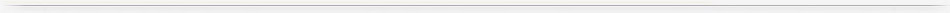

洲际赛事
欧洲赛事
欧洲赛事
英格兰
意大利
西班牙
德国
法国
葡萄牙
苏格兰
荷兰
比利时
瑞典
芬兰
挪威
丹麦
奥地利
瑞士
爱尔兰
北爱尔兰
俄罗斯
波兰
乌克兰
捷克
希腊
罗马尼亚
斯洛伐克
冰岛
拉脱维亚
白俄罗斯
立陶宛
威尔士
匈牙利
土耳其
克罗地亚
保加利亚
斯洛文尼亚
塞浦路斯
塞尔维亚
以色列
阿尔巴尼亚
哈萨克斯坦
波黑
爱沙尼亚
摩尔多瓦
阿美尼亚
黑山
马耳他
卢森堡
法罗群岛
格鲁吉亚
阿塞拜疆
马其顿
圣马力诺
安道尔
科索沃
美洲赛事
亚洲赛事
大洋洲赛事
非洲赛事
球员球队
搜 索
2017-2018 英格兰超级联赛 赛程积分 报错
|
轮次 |
时间 |
主队 |
比分 |
客队 |
让球 |
大小 |
资料 |
半场 |
||
全场 |
半场 |
全场 |
半场 |
|||||||
| 4 | 09-09 19:30 | 曼彻斯特城[4] | 利物浦[2]1 | 半球 | 平/半 | 3 | 1/1.5 | [析][欧] [亚][大] | 2-0 | |
| 4 | 09-09 22:00 | 南安普敦[8] | 沃特福德[7] | 半/一 | 平/半 | 2.5 | 1 | [析][欧] [亚][大] | 0-1 | |
| 4 | 09-09 22:00 | 埃弗顿[12] | 托特纳姆热刺[9] | *平/半 | 平手 | 2.5 | 1 | [析][欧] [亚][大] | 0-2 | |
| 4 | 09-09 22:00 | 莱切斯特城[15] | 切尔西[6] | *半/一 | *平/半 | 2.5/3 | 1 | [析][欧] [亚][大] | 0-1 | |
| 4 | 09-09 22:00 | 阿森纳[16] | 伯恩茅斯[18] | 一/球半 | 半球 | 3 | 1/1.5 | [析][欧] [亚][大] | 2-0 | |
| 4 | 09-09 22:00 | 布莱顿[17] | 西布罗姆维奇[5] | 平手 | 平手 | 2 | 0.5/1 | [析][欧] [亚][大] | 1-0 | |
| 4 | 09-10 00:30 | 斯托克城[11] | 曼彻斯特联[1] | *一球 | *半球 | 2.5/3 | 1 | [析][欧] [亚][大] | 1-1 | |
| 4 | 09-10 20:30 | 伯恩利[12] | 水晶宫[18] | 平/半 | 平手 | 2/2.5 | 1 | [析][欧] [亚][大] | 1-0 | |
| 4 | 09-10 23:00 | 斯旺西[14] | 纽卡斯尔联[16] | 平/半 | 平手 | 2.5 | 1 | [析][欧] [亚][大] | 0-0 | |
| 4 | 09-12 03:00 | 西汉姆联[20] | 哈德斯菲尔德[6] | 半球 | 平/半 | 2/2.5 | 1 | [析][欧] [亚][大] | 0-0 | |
| 排名 | 球队名称 | 赛 | 胜 | 平 | 负 | 得 | 失 | 净 | 胜% | 平% | 负% | 均得 | 均失 | 积分 | 近六轮 |
| 1 | 曼彻斯特城 2 | 38 | 32 | 4 | 2 | 106 | 27 | 79 | 84.2% | 10.5% | 5.3% | 2.79 | 0.71 | 100 | 赢 赢 赢 走 赢 赢 |
| 2 | 曼彻斯特联 1 | 38 | 25 | 6 | 7 | 68 | 28 | 40 | 65.8% | 15.8% | 18.4% | 1.79 | 0.74 | 81 | 输 赢 赢 输 走 赢 |
| 3 | 托特纳姆热刺 2 | 38 | 23 | 8 | 7 | 74 | 36 | 38 | 60.5% | 21.1% | 18.4% | 1.95 | 0.95 | 77 | 输 走 赢 输 赢 赢 |
| 4 | 利物浦 1 | 38 | 21 | 12 | 5 | 84 | 38 | 46 | 55.3% | 31.6% | 13.2% | 2.21 | 1 | 75 | 走 赢 走 走 输 赢 |
| 5 | 切尔西 4 | 38 | 21 | 7 | 10 | 62 | 38 | 24 | 55.3% | 18.4% | 26.3% | 1.63 | 1 | 70 | 赢 赢 赢 赢 走 输 |
| 6 | 阿森纳 2 | 38 | 19 | 6 | 13 | 74 | 51 | 23 | 50.0% | 15.8% | 34.2% | 1.95 | 1.34 | 63 | 输 赢 输 赢 输 赢 |
| 7 | 伯恩利 | 38 | 14 | 12 | 12 | 36 | 39 | -3 | 36.8% | 31.6% | 31.6% | 0.95 | 1.03 | 54 | 赢 输 走 走 输 输 |
| 8 | 埃弗顿 3 | 38 | 13 | 10 | 15 | 44 | 58 | -14 | 34.2% | 26.3% | 39.5% | 1.16 | 1.53 | 49 | 走 走 赢 赢 走 输 |
| 9 | 莱切斯特城 5 | 38 | 12 | 11 | 15 | 56 | 60 | -4 | 31.6% | 28.9% | 39.5% | 1.47 | 1.58 | 47 | 输 走 输 输 赢 输 |
| 10 | 纽卡斯尔联 2 | 38 | 12 | 8 | 18 | 39 | 47 | -8 | 31.6% | 21.1% | 47.4% | 1.03 | 1.24 | 44 | 赢 输 输 输 输 赢 |
| 11 | 水晶宫 | 38 | 11 | 11 | 16 | 45 | 55 | -10 | 28.9% | 28.9% | 42.1% | 1.18 | 1.45 | 44 | 走 赢 走 赢 赢 赢 |
| 12 | 伯恩茅斯 1 | 38 | 11 | 11 | 16 | 45 | 61 | -16 | 28.9% | 28.9% | 42.1% | 1.18 | 1.61 | 44 | 走 输 输 输 赢 赢 |
| 13 | 西汉姆联 2 | 38 | 10 | 12 | 16 | 48 | 68 | -20 | 26.3% | 31.6% | 42.1% | 1.26 | 1.79 | 42 | 走 输 输 赢 走 赢 |
| 14 | 沃特福德 4 | 38 | 11 | 8 | 19 | 44 | 64 | -20 | 28.9% | 21.1% | 50.0% | 1.16 | 1.68 | 41 | 输 输 走 输 赢 输 |
| 15 | 布莱顿 2 | 38 | 9 | 13 | 16 | 34 | 54 | -20 | 23.7% | 34.2% | 42.1% | 0.89 | 1.42 | 40 | 输 走 走 赢 输 输 |
| 16 | 哈德斯菲尔德 2 | 38 | 9 | 10 | 19 | 28 | 58 | -30 | 23.7% | 26.3% | 50.0% | 0.74 | 1.53 | 37 | 走 赢 输 走 走 输 |
| 17 | 南安普敦 2 | 38 | 7 | 15 | 16 | 37 | 56 | -19 | 18.4% | 39.5% | 42.1% | 0.97 | 1.47 | 36 | 输 走 赢 走 赢 输 |
| 18 | 斯旺西 1 | 38 | 8 | 9 | 21 | 28 | 56 | -28 | 21.1% | 23.7% | 55.3% | 0.74 | 1.47 | 33 | 走 输 输 输 输 输 |
| 19 | 斯托克城 1 | 38 | 7 | 12 | 19 | 35 | 68 | -33 | 18.4% | 31.6% | 50.0% | 0.92 | 1.79 | 33 | 输 走 走 走 输 赢 |
| 20 | 西布罗姆维奇 1 | 38 | 6 | 13 | 19 | 31 | 56 | -25 | 15.8% | 34.2% | 50.0% | 0.82 | 1.47 | 31 | 走 赢 走 赢 赢 输 |
| ■欧冠杯小组赛资格 ■欧罗巴联赛杯小组赛 ■降级球队 | |||||||||||||||
赛 制编辑 | ||||||||||||||
| 英格兰足球超级联赛共由20支球队组成，采取双循环赛制（每支球队分别以主、客场身份和其他球队交锋两次）。单场比赛积分计算方法是胜者得3分、负者得0分、平局则双方各得1分，赛季末按累计积分高低排名。积分相同的球队由淨胜球和总进球数等来决定排名，如果争冠球队通过以上条件仍不分上下就需要进行附加赛。 联赛前四名直接参加下赛季冠军联赛小组赛，第五名参加下赛季欧霸杯（英格兰足总盃冠军和联赛盃冠军也参加欧霸杯，如果足总盃冠军已经取得欧战资格，则其名额给足总盃亚军，而如果联赛盃冠军已经取得欧战资格，则其名额给联赛中排名靠前的球队）。另外，本赛季英超联赛规定升3降3，联赛排名榜尾的3支球队下赛季将降到英冠。 | ||||||||||||||
页面最后更新时间:2018-05-24 14:43:04

| 足球比分 | 篮球比分 | 赛事资讯 | 足球资料库 | 亚盘王 | 比分应用 | 球探社区 | 体育标签 |
| 关于本站 | 广告合作 | 数据服务 | 用户守则 | 联系我们 | 网站地图 | 投诉建议 Copyright © 2002-2018球探体育版权所有 |
| 经营许可证：粤B1.B2-20060628 粤ICP备09088851号-9 互联网文化经营许可证：粤网文[2017]7225-1753号 营业执照 |
| 声明：本网资讯仅供体育爱好者浏览、购买中国足彩参考之用。任何人不得用于非法用途，否则责任自负。本网所登载广告均为广告客户的个人意见及表达方式，和本网无任何关系。链接的广告仅限于体育或中国足彩推荐信息、不得含有色情、政治或博彩信息，如有违反国家法律规定的，本网有权随时予以删除，并保留与有关部门合作追究的权利。 |